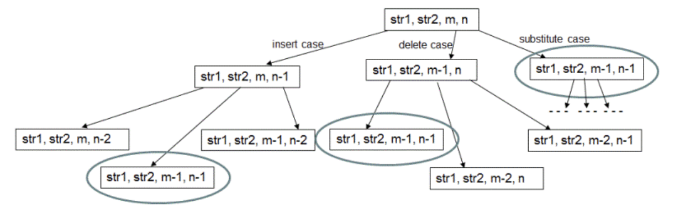

Edit Distance
-
Problem
Find the minimum edit distance od 2 strings. - Minimum Edit distance between two strings str1 and str2 is defined as the minimum number of insert/delete/substitute operations required to transform str1 into str2. For example if str1 = "ab", str2 = "abc" then making an insert operation of character 'c' on str1 transforms str1 into str2 or str2 into str1. Therefore, edit distance between str1 and str2 is 1.
-
Let there be two strings `X[1,2,…,m]` and `Y[1,2,….,n]`. This problem has optimal substructure i.e. it can be resolved into simpler subproblems recursively until the final solution becomes trivial.
Subproblem: Transform substring `X[1,2,…,i]` into `Y[1,2,….,j]` by performing edit operations on `X`. Base cases :- If one of the strings is empty.If `X` is empty, insert all the remaining characters of `Y` in `X` and increase the cost by the number of characters inserted. Similarly, if `Y` is empty insert all the remaining characters of `X` in Y and increase the cost by the number of characters inserted.
- The last character of both the strings is same Nothing needs to be done as none of the three edit operations is required. Recursively check for `X[1,2,…,i-1]` and `Y[1,2,….,j-1]`
-
The last characters of `X` and `Y` are different
Now , we can perform any of the three edit operations, but since we are required to find out the minimum number of operations we will perform all of them and select the one which gives most optimised output.
Insertion: Insert the unmatched character into `X`. Then recursively check for `X[1,2,…,i]` and `Y[1,2,….,j-1]`.
Deletion: Delete the unmatched character from `X`. Then recursively check for `X[1,2,…,i-1]` and `Y[1,2,….,j]`.
Substitution: Replace the current character of `X` by current character of `Y`. Then recursively check for `X[1,2,…,i-1]` and `Y[1,2,….,j-1]`.
- The above method has exponential time complexity.
-
To avoid these redundant computations, we use dynamic programming based approach.Compute edit distance for smaller sub-problems and use the results of these smaller sub-problems to compute results for sub-sequent larger problems. The results are stored in a two dimensional array
- Each cell (m,n) of this array represents distance first 'm' characters of str1 and first 'n' characrers of str2. For example, when 'm' is 0, distance between str1 which is of 0 length and str2 of 'n' length is 'n'. Please observe 0th row of above matrix. Same is the case for values in 0th column where str2 is of 0 length.
- Now in this matrix, for cell (m,n) which represents distance between str1 of length 'm' characters and str2 of length 'n' characters, if 'm'th character of str1 and 'n'th character of str2 are same, then we simply need to fill cell(m,n) using value of cell (m-1, n-1) which represents edit distance between first 'm-1' characters if str1 and first 'n-1' characters of str2. Notice the red arrows in the above array.
-
If 'm'th character of str1 is not equal to 'n'th character of str2, then we choose minimum value from following three cases-
- Delete 'm'th character of str1 and compute edit distance between 'm-1' characters of str1 and 'n' characters of str2. For this computation, we simply have to do - (1 + array[m-1][n]) where 1 is the cost of delete operation and array[m-1][n] is edit distance between 'm-1' characters of str1 and 'n' characters of str2.
- Similarly, for the second case of inserting last character of str2 into str1, we have to do - (1 + array[m][n-1]).
- And for the third case of substituting last character of str1 by last character of str2 we use - (1 + array[m-1][n-1]).
- This method has time complexity `O(mn)`, where m and n are length of strings.
-
//edit distance between some prefix of the first string, x[1 … i], and some prefix of the second, y[1 … j] for i=0,1,2...,m: E(i,0)=i for j=1,2,3...,n: E(0,j)=j for i=0,1,2...,m: for j=1,2,3...,n: E(i,j)=min{E(i-1,j)+1,E(i,j-1)+1,E(i-1)(j-1)+diff(i,j)} return E(m,n)
